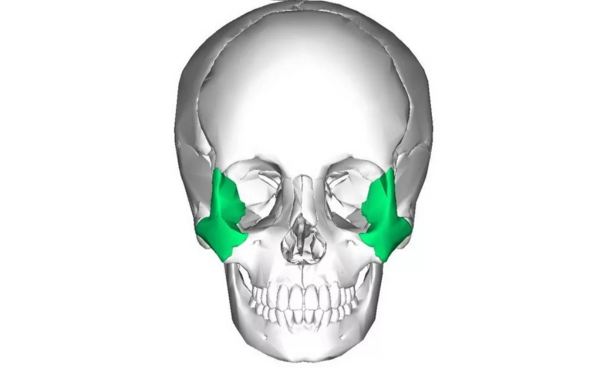
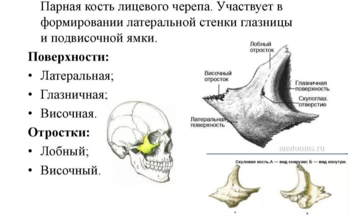

Максилла соединена со скуловой костью - это парная кость, своими размерами определяет ширину и форму лица, в свою очередь, соединяется с лобной и височной костями черепа. Воздействуя на скуловую кость мы улучшаем всю геометрию лицевого черепа, придавая лицу выразительность, кроме того скуловая область влияет на разрез глаз, поднимая их уголки вверх.
Скуловая кость
1. Прием на расширение верхней челюсти и разблокировку швов.
Заводим большие пальцы за верхние резцы по обе стороны срединного небного шва. На медленном вдохе, мягко оказывая давление на нёбо, большие пальцы двигаются в сторону, раздвигая нёбо вверх и вширь. На выдохе не ослабляем давление, сохраняя шов расширенным. Сделать три раза на одну точку и перейти к следующей точке глубже. Должно получиться четыре - пять проходок.
2. Прием на поднятие скул
Ставим большие пальцы на небо под скуловую кость (около коренных зубов) и совершаем мягкое раздвигающее скулы вверх и в сторону надавливание, движение на расширение делается на вдохе, на выдохе сохраняем расширенное положение, снимая блоки, добавляем визуализацию и стараемся почувствовать движение скул вперед, вверх к глазницам и в сторону.